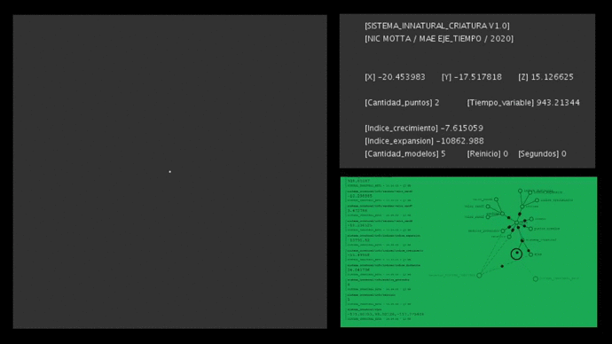

Tras la observación y manipulación de los distintos registros sensados de eventos naturales en espacios situados junto al grupo MURU 7.8, y la invensión personal en laboratorio digital de eventos ficticios, me pregunto: ¿Cómo es la relacion morfogenética entre los modelos de procedencia digital y los de procedencia natural?
Tomo como eje coincidente el término [seed] cómo núcleo contenedor de información para el patrón de creecimiento: Por un lado la información genética contenida en una semilla y por otro lado la manera en la cual se genera un número aleatorio [método por el cúal se generan los modelos digitales en sistema_innatural]
En este proyecto propongo desarrollar una [forma] de visualizar ambos registros / modelos para evidenciar estos puntos de encuentro o similitudes, poniendo en diálogo / duda: